| 基礎からのベイズ統計学 |
| 基礎からのベイズ統計学 |
確率分布が評価できても、それに従う乱数を発生させられるとは限らない。
正規化定数が評価できないことの方が多い。
 事後分布のカーネルだけを使い、乱数を発生させたい。
事後分布のカーネルだけを使い、乱数を発生させたい。
マルコフ連鎖が定常分布に収束するための十分条件
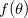が目標分布、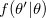が遷移核であるとすると、
| 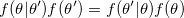 | (4.18) |
が成り立っていること1。 このとき、
| 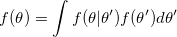 | (4.19) |
となる。
遷移核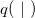を適当に設定すると、
| 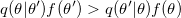 | (4.20) |
のように詳細釣り合い条件は満たされなくなる。 メトロポリス・ヘイスティングス法では、確率補正
| 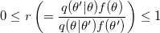 | (4.24) |
により詳細釣り合い条件が満たされるようにする。
提案分布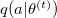において
| 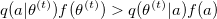 | (4.27) |
であれば、確率
| 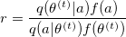 | (4.28) |
で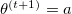とし、確率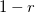で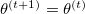とする。
そうでなければ、常にとする。
ここで、一般に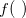は事後分布であるから、
| 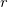 | 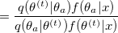 | (4.29) | ||
 |
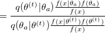 | (4.30) | ||
|
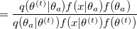 | (4.31) |
となり、事後分布についてはカーネルのみ利用すれば良いことがわかる。
提案分布を単に無条件分布とすることも可能。 この場合、補正係数は
| 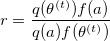 | (4.33) |
となる。 もし提案分布が区間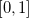の一様分布なら、補正係数は
| 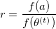 | (4.35) |
と簡略化される。
候補の提案を、対象な分布からの実現値を利用して、
| 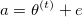 | (4.36) |
とする。 この場合、提案分布が
| 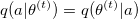 | (4.37) |
となるため、補正係数は常に
| (4.38) |
となる。
事後分布からのサンプル の関数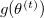
の関数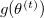
研究仮説 について
| 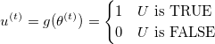 | (4.44) |
とすると、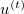の平均は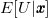のEAP推定量で、研究仮説が正しい確率の評価を与えてくれる。
Footnotes
 が
が の倍起こりやすいとすると、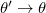は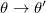より倍起こりやすい。
の倍起こりやすいとすると、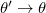は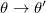より倍起こりやすい。| 基礎からのベイズ統計学 |